Memory, in your control.
Designing how people see, fix and limit what an AI assistant remembers about them, so personalisation feels helpful instead of unsettling.
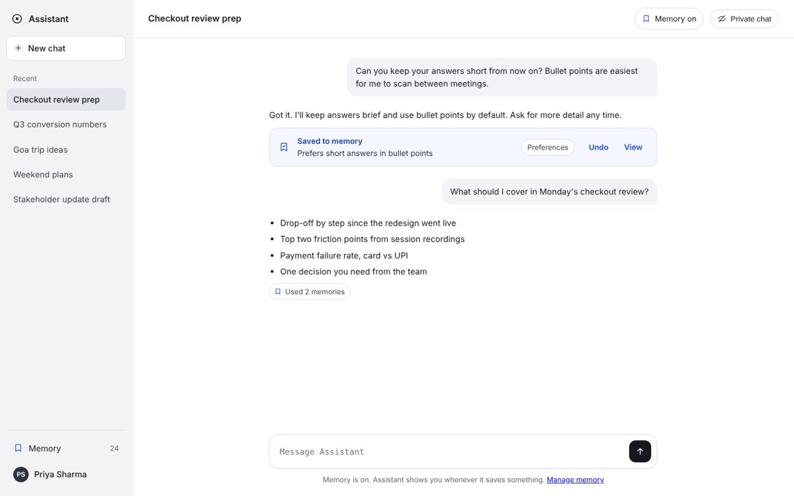
One moment explains the whole problem
Priya asked for help with a leave email because her mother was in hospital. Two weeks later, sharing her screen in a meeting, she asked for lunch ideas.
Everyone has a memory page. Nobody handles the moments that hurt.
I audited how four popular AI assistants handle memory, and reviewed public user reports and help docs.
Memory capabilities covered
Out of 9. Partial support counts as half.
| Capability | ChatGPT | Gemini | Copilot | Claude | This design |
|---|---|---|---|---|---|
| Notice when something is saved | Yes | Unclear | Yes | Partly | With undo |
| Edit a memory directly | Via chat | Partly | Limited | Yes | In place |
| Separate memory by context | No | No | Work only | Per project | 3 spaces |
| Ask before saving sensitive details | No | No | No | Avoids some | Always |
| Show which memory shaped an answer | No | No | No | Citations | With fix |
| Memories that expire | No | No | No | No | Yes |
| Protection while screen sharing | No | No | No | No | Presenting mode |
of four assistants protect you while you share your screen.Audit of ChatGPT, Gemini, Microsoft 365 Copilot and Claude, October 2026
Composite quotes representing themes in public user reports and reviews. Not verbatim.
Every feature traces back to a real problem
It's not memory. It's not knowing.
Being remembered is fine when you know.
→ Every save visible
Sensitivity follows a pattern
Health, money, relationships, beliefs, jobs.
→ Ask first
Wrong answers are dead ends
No way to trace them to a memory.
→ Used memories
Forgetting must feel final
"OK, I'll forget" isn't believed.
→ Named proof
Settings are a last resort
Few visit a memory page unprompted.
→ Control in chat
No silent saves
Visible, undoable in one tap.
Ask before the sensitive
A clear yes, every time.
Show your working
Memory used? Say so.
Forgetting is final
As easy as saving, with proof.
Context stays put
Work at work. Personal stays personal.
Three people, three levels of trust
Priya, 28
Product analyst, Bengaluru- Goal
- Help without repeating context
- Fear
- Personal details at work
Arjun, 21
Engineering student, Jalandhar- Goal
- A study partner that knows him
- Fear
- Family seeing personal replies
Meera, 47
School administrator, Pune- Goal
- Help with letters, no worries
- Fear
- Can't find the controls
Control lives where memory happens: in the chat
18 screens across desktop and mobile. The ten key moments:

Saved to memory, with Undo
A quiet note says exactly what was remembered, and where it went.
- Inline, so the conversation keeps flowing
- Undo and View right there
- The space tag shows a wrong category at once
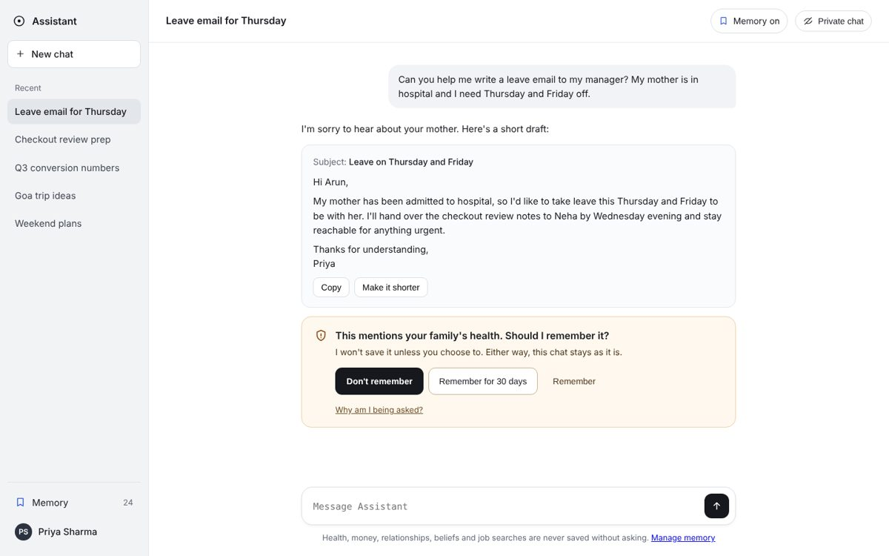
Ask first, after helping
Nothing sensitive is saved without a clear yes. The task always comes first.
- "Don't remember" is the primary choice
- A 30-day option for temporary situations
- Amber means sensitive, everywhere

Answers show their working
See which memories shaped a reply, and fix them where the problem appeared.
- "I noticed this" vs "You asked me to remember"
- Edit and Forget in place
- Answer without memory, to compare
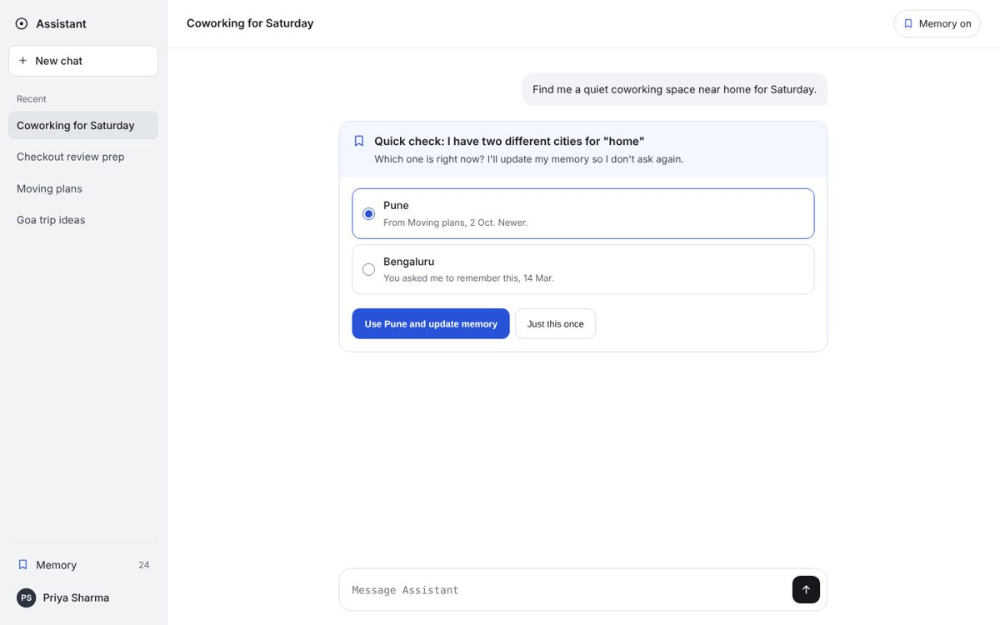
When memories disagree, ask once
Two cities for "home"? It checks, shows both sources, and updates itself.
- Newer source chosen by default
- "Just this once" leaves memory alone
- The old memory goes to Recently forgotten
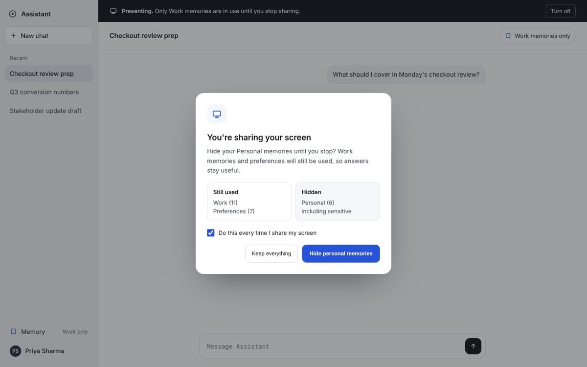
Presenting mode
One question when screen sharing starts: exactly what stays and what hides.
- Personal memories hidden while sharing
- A banner keeps the mode visible
- "Every time" becomes a preference
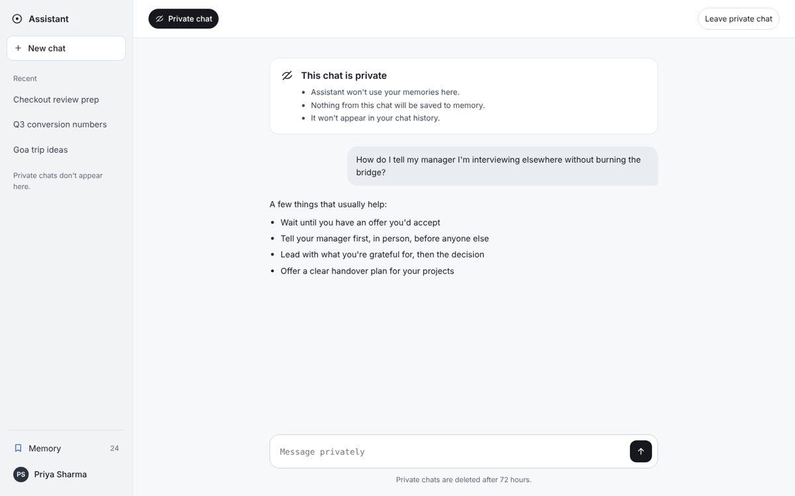
Private chat
No memories used, nothing saved, not in history. Said plainly, every time.
- A distinct header, never a guess
- Deletion timing stated upfront
- One tap to leave
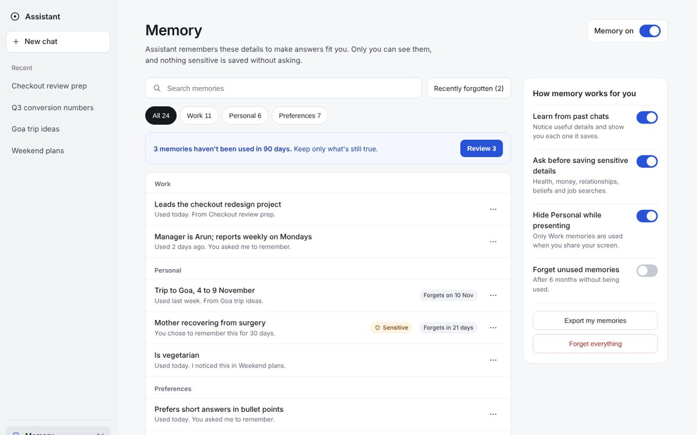
Everything remembered, organised
For occasional review. Spaces with counts show the shape of what's stored.
- Work, Personal and Preferences tabs
- Sensitive and expiry badges
- Plain-language settings beside the list
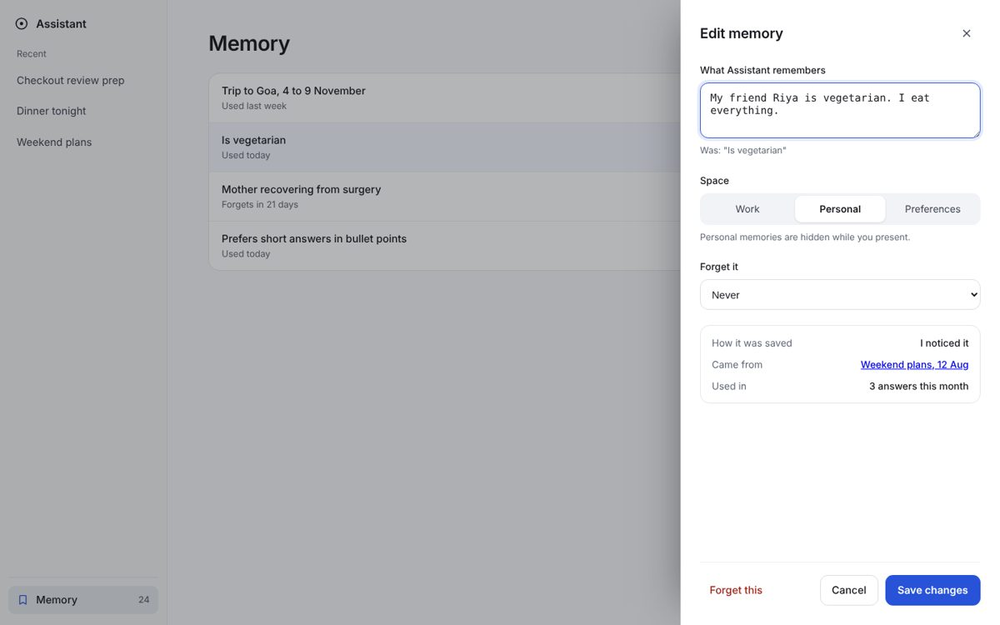
Edit, don't just delete
"Is vegetarian" becomes "My friend Riya is vegetarian". The useful part stays.
- Old wording visible while editing
- Move between spaces
- Choose when it's forgotten
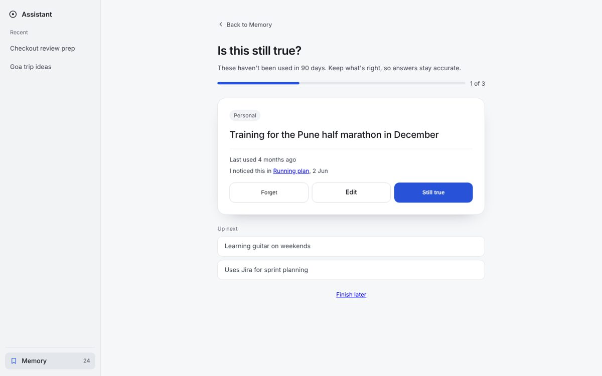
Is this still true?
Memories unused for 90 days, reviewed one at a time.
- Forget, Edit or Still true
- Progress always visible
- Finish later, any time
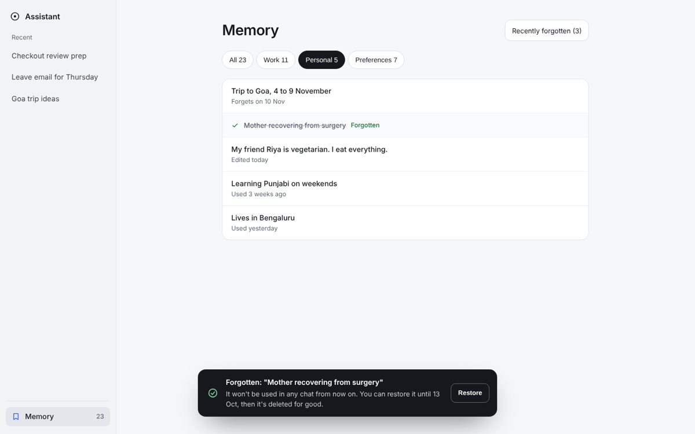
Forgetting that feels final
Names the memory, confirms it's unused everywhere, gives a restore date.
- 7-day restore window
- Recently forgotten list with dates
- Typed confirmation to forget everything
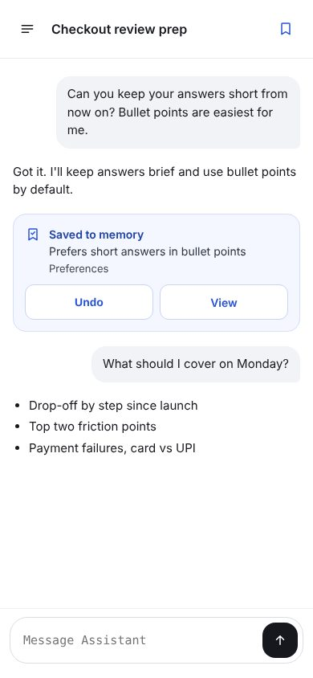
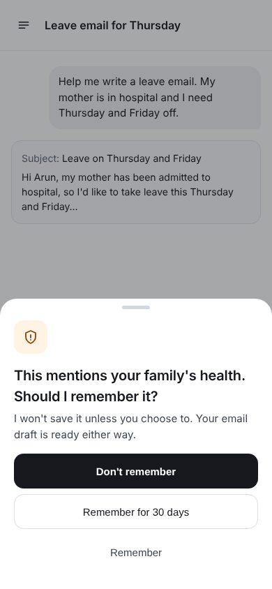
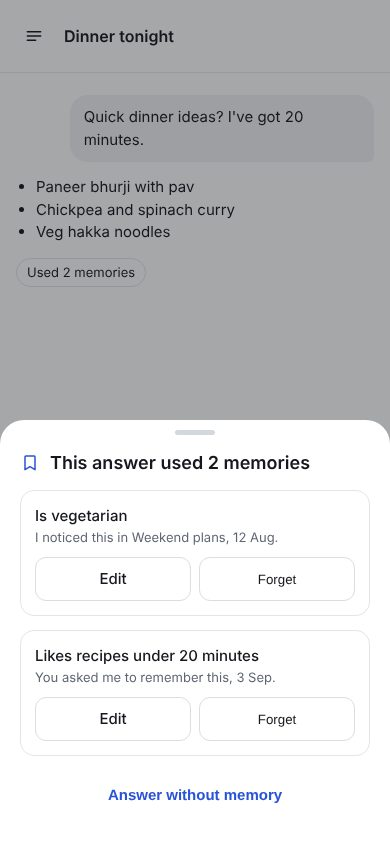
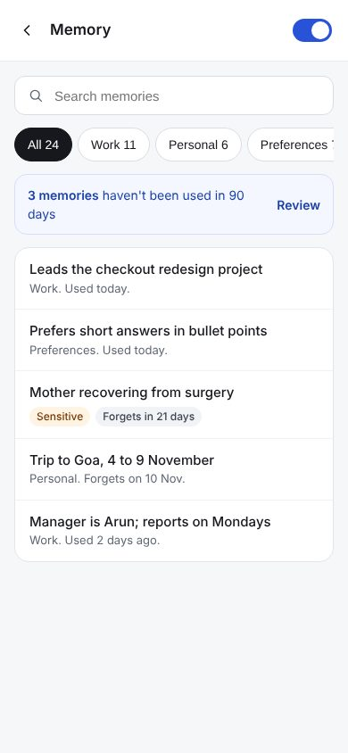
What changed from wireframe to final
One colour, one meaning
Quiet ink and white, so memory moments stand out the instant they appear.
Memory blue
Memory events only
Sensitive amber
Sensitive info only
Destructive red
Forget everything only
Ink
Text and safe actions
Four tasks, each with a bar to clear
A moderated test with 5 participants on the Figma Make prototype. Headline measure: "feeling in control", rated before and after.
"Make it forget your answer-length preference"
Target: under 20s, unaided
"Mention a family illness. Don't let it remember"
Target: all choose "Don't remember"
"This answer seems off. Fix it"
Target: fixed from the answer
"You're about to share your screen"
Target: can explain what hides
Trust is designed in small moments
Trust lives in small moments
A one-line notice and an Undo button did more than the whole memory page.
Defaults are decisions
Making "Don't remember" primary changes behaviour more than any explanation.
Next
Run the study, then explore memory for family accounts and AI agents.
Thanks for reading.
Next case study: Los Santos Stories